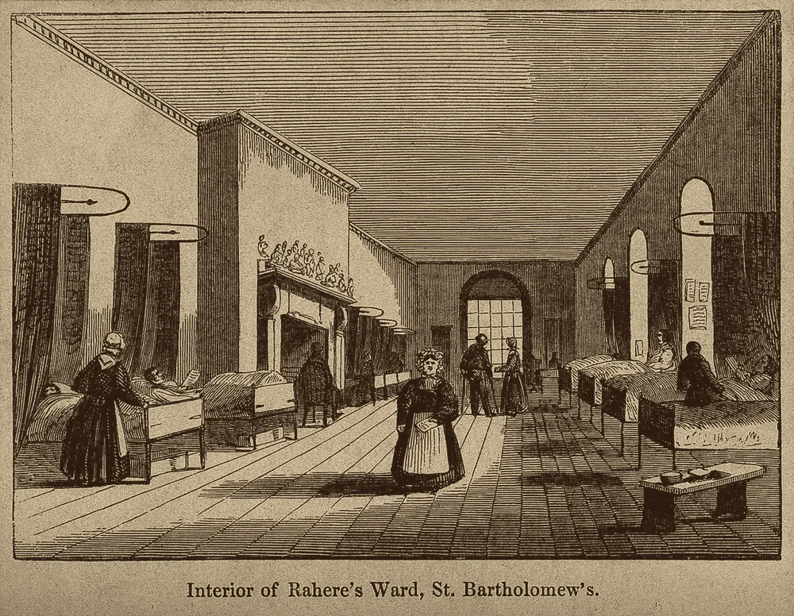

· Edición 6 · 5 min de lectura
EPS deben 58 billones: el pago casi no distingue sanos de enfermos
Revisada el · 1 actualización y 1 corrección posteriores a la publicación

EPS deben 58 billones: el pago casi no distingue sanos de enfermos
Ver todo el tema, de principio a fin →
En pocas palabras. Las EPS, las empresas que lo afilian a usted y contratan su atención en salud, deben más plata cada año. Una razón de fondo: el sistema les paga casi lo mismo por una persona sana que por una muy enferma. Los Países Bajos pagan según los diagnósticos, y aquí también podría funcionar.
Qué pasó. El 24 de septiembre, el Gobierno arrancó un plan de choque: la Adres, que administra el dinero de la salud pública, les pagará directamente a clínicas y proveedores de medicamentos. La meta es atender a más de un millón de pacientes que esperan.
Según la Contraloría, las EPS cerraron 2025 debiendo 58,06 billones de pesos, 26,5% más que un año antes. Y 29,7 millones de personas están en EPS intervenidas por la Supersalud.
¿Por qué pasa? Por cada afiliado, el sistema le paga a la EPS una suma fija al año: la UPC. Según la Contraloría, el problema principal es que atender a los afiliados costó más que la UPC.
- La UPC casi no mira la enfermedad. Se ajusta por edad, sexo y zona, no por diagnóstico. Un estudio de 2014 encontró que explica apenas 1,45% de las diferencias de gasto entre una persona y otra.
- Con los más enfermos se queda muy corta. Para el 20% de afiliados que más gasta, cubre 27 de cada 100 pesos.
- Resultado: la EPS que atrae o conserva enfermos pierde plata.
La deuda baja a hospitales y farmacias. Y el paciente termina ante un juez, con una tutela, para pedir que le protejan su derecho a la salud:
Fuente: Defensoría del Pueblo
Ver datos
| tutelas | |
|---|---|
| 2023 | 197.737 |
| 2024 | 265.173 |
| 2025 | 312.500 (aproximado) |
El gobierno anterior culpaba a la intermediación de las EPS; la Contraloría y los gremios, a una UPC que no alcanza.
¿Alguien lo ha resuelto? Los Países Bajos también tienen aseguradoras que compiten. Pero les pagan según lo enfermos que están sus afiliados, mirando los diagnósticos y medicamentos del año anterior. Así, atender enfermos deja de ser una pérdida segura.
Una evaluación de 2013 encontró que el modelo de 2012 cubría cerca de 70 de cada 100 pesos del faltante que dejaban los pacientes crónicos. Y el estudio colombiano de 2014 mostró que, si la fórmula mira los diagnósticos, su acierto sube de 1,45% a 13,53%.
Pero ojo.
- Si el diagnóstico sube el pago, se diagnostica más. En Estados Unidos, los afiliados a planes privados de Medicare aparecen entre 6% y 16% más enfermos que en el plan público, según el Journal of Political Economy. Se enferman más en el papel.
- Repartir mejor no es tener más. Si la UPC completa no alcanza, repartirla mejor solo reparte el faltante.
- El plan de choque no cambia la regla. Da plata para hoy; la fórmula sigue igual.
Brasil prohíbe las apuestas en línea que reguló hace dos años
Ver todo el tema, de principio a fin →
En pocas palabras. Hace dos años, Brasil permitió las apuestas en línea y empezó a cobrarles impuestos. Ahora las prohíbe: mucha gente, también la más pobre, perdió plata apostando desde el celular. El Reino Unido y Noruega eligieron otro camino: ponerles límites.
Qué pasó. El 25 de septiembre, el presidente Lula da Silva firmó una medida provisional: una norma que vale como ley, pero que el Congreso debe aprobar en 120 días.
Prohíbe las apuestas deportivas en línea, los casinos virtuales, su publicidad y los pagos por Pix, el sistema brasileño de pagos instantáneos. Los apostadores tienen hasta el 5 de octubre para sacar su plata.
El anuncio llega a pocas semanas de la elección en la que Lula busca reelegirse. Las empresas ya demandaron la medida.
¿Por qué pasa? La ganancia de la empresa sale de lo que pierden los apostadores. Y en línea se apuesta desde el celular, a cualquier hora.
- Los pobres también apostaban. En agosto de 2024, según el Banco Central, 5 millones de beneficiarios de Bolsa Família enviaron 3.000 millones de reales a las casas de apuestas: cerca de 21 de cada 100 reales del subsidio.
- Engancha. La Comisión de The Lancet Public Health (2024) estima que la adicción al juego podría afectar a casi 16 de cada 100 personas que juegan en casinos en línea.
- El Estado también ganaba. Las empresas autorizadas pagaron 9.950 millones de reales en impuestos en 2025, según el sector.
En Colombia también pesa: casi la mitad de lo que recaudó Coljuegos entre enero y agosto de 2026 vino del juego en línea.
¿Alguien lo ha resuelto? El Reino Unido y Noruega no prohibieron. Le pusieron límites al producto:
- Apuestas más pequeñas. En abril de 2019, el Reino Unido bajó de £100 a £2 la apuesta máxima en las máquinas de los locales de apuestas. Según su regulador, lo que ganaban esas máquinas habría caído más de 90%.
- Un techo para lo que se pierde. En Noruega, el operador es del Estado y pone un límite obligatorio de pérdidas al mes.
Pero ojo. El regulador británico advierte que todavía hay muchos jugadores con problemas en esas máquinas. Y los estudios noruegos usan datos del propio operador.
Prohibir también tiene riesgos. El sector calcula que el mercado no autorizado mueve entre 26.000 y 40.000 millones de reales al año, y la medida no alcanza a los sitios del exterior.
Asombro
Árboles que respiran de noche. Algunas especies de Clusia, árboles del trópico americano, toman el dióxido de carbono de noche. Así pueden cerrar sus poros de día y perder menos agua. Un estudio en Nature Communications encontró que el truco apareció varias veces: es una pista para cultivos que resistan la sequía.
La costilla que se estaba curando. En una costilla rota de Scotty, el Tyrannosaurus rex más grande que se conoce, los rayos X y los neutrones mostraron los vasos sanguíneos que se formaron mientras el hueso sanaba, hace 66 millones de años.
La paradoja del día
Lo más absurdo de la edición, en dos líneas
Brasil permitió las apuestas en línea para controlarlas y cobrarles impuestos. Dos años después las prohíbe porque la gente apostaba.
Para conversar
La pregunta. En la salud se paga lo mismo por el sano que por el enfermo. En las apuestas, el Estado cobra impuestos sobre lo que otros pierden. En los dos casos, una regla sencilla le pasa la cuenta a los más débiles. ¿Qué conviene más: prohibir, que es fácil de anunciar, o cambiar la regla, que es difícil de vigilar?
Qué puede hacer usted. Si en su familia alguien espera un medicamento o un procedimiento de la EPS, ponga la queja ante la Superintendencia de Salud. Queda registrada y se cuenta.
¿Le interesa ver las fuentes?
Todos los documentos y datos que usamos
29 fuentes: 10 académicas, 6 oficiales, 12 de prensa, 1 de referencia.
- Prensa Infobae. Crisis financiera de las EPS: la deuda llegó a $58 billones en 2025 y solo cuatro cumplen requisitos financieros
- Prensa El Tiempo. Contraloría revela el estado financiero de las EPS: las deudas llegan a $58 billones
- Prensa Consultorsalud. EPS cerraron 2025 con deuda de $58,06 billones y solo cuatro cumplieron las condiciones financieras
- Prensa Infobae. Arrancó el plan de choque para la salud: más de un millón de pacientes con pendientes
- Oficial Defensoría del Pueblo. Tutelas para invocar la protección del derecho a la salud aumentaron cerca del 18%
- Oficial Defensoría del Pueblo. Cerca de 198.000 tutelas por vulneración del derecho a la salud en 2023
- Prensa El Colombiano. Tutelas en salud subieron 34,1% en 2024, según la Defensoría
- Oficial Superintendencia Nacional de Salud. Entidades en medida especial, liquidación y traslados de EPS
- Oficial Ministerio de Salud. La deuda acumulada de las EPS evidencia el colapso del modelo de intermediación (2025)
- Académica BMJ Global Health. Efecto de los traslados masivos desde EPS liquidadas sobre la sostenibilidad financiera del aseguramiento
- Académica SSRN (Riascos, Alfonso y Romero). El desempeño de los modelos de ajuste de riesgo en el mercado de aseguramiento colombiano
- Académica Health Economics Review. Selección de ajustadores de riesgo con regresión penalizada y juicio experto: evidencia de Colombia
- Académica Expert Review of Pharmacoeconomics & Outcomes Research. La compensación de riesgos en los Países Bajos: una evaluación empírica
- Académica Journal of Political Economy. Upcoding: evidencia de Medicare sobre un ajuste de riesgo maleable
- Referencia Universidad de la Costa. ¿Cuáles han sido las principales EPS liquidadas en Colombia?
- Prensa U.S. News / Reuters. Lula prohíbe la operación de apuestas en línea en Brasil
- Prensa Brasil de Fato. El Gobierno anuncia la medida provisional que pone fin a las apuestas en línea
- Prensa O Tempo. La prohibición empujaría a los apostadores a sitios ilegales, dicen entidades del sector
- Oficial Banco Central do Brasil. Análisis técnico del mercado de apuestas en línea en Brasil y el perfil de los apostadores (Estudio especial 119)
- Prensa Agência Brasil. Beneficiarios de Bolsa Família gastaron R$ 3.000 millones en apuestas en agosto
- Académica The Lancet Public Health. Comisión de The Lancet Public Health sobre el juego
- Académica Management Science. Las consecuencias financieras de legalizar las apuestas deportivas
- Académica The Lancet Regional Health – Americas. Apuestas deportivas en las Américas: el aumento de los riesgos invisibles
- Oficial Gambling Commission (Reino Unido). Evaluación estratégica nacional 2020: máquinas de juego en locales
- Académica Journal of Gambling Studies. El efecto de los recordatorios de límite de pérdidas: estudio con apostadores noruegos
- Prensa Sigma. Las apuestas del Mundial elevaron el recaudo del juego en Colombia
- Académica Nature Communications. Los genomas de Clusia y la evolución de los tipos de metabolismo CAM
- Prensa ScienceDaily. Árboles tropicales que respiran de noche para resistir la sequía
- Prensa Phys.org. Imágenes con neutrones de una costilla de T. rex
Glosario
Las palabras técnicas, explicadas
- UPC (unidad de pago por capitación): lo que el sistema le paga a una EPS al año por cada afiliado, para cubrir sus servicios.
- Ajuste de riesgo o compensación de riesgos: pagar más por los afiliados que se espera que gasten más, según su edad, sus diagnósticos o sus medicamentos.
- Subcompensación: cuando lo que se paga por un grupo de afiliados es menor que lo que cuesta atenderlo.
- Intervención forzosa: la Supersalud toma el control de una EPS y nombra un agente interventor.
- Giro directo: la Adres paga directamente a hospitales y clínicas, sin que el dinero pase por la EPS.
- Diferencias en diferencias: método que compara cómo cambian los afectados por una medida frente a los no afectados, antes y después.
- Codificación al alza (upcoding): registrar diagnósticos más graves o más numerosos para recibir un pago mayor.
- Medida provisional: norma con fuerza de ley que dicta el presidente de Brasil y que el Congreso debe aprobar en un plazo para que siga vigente.
- Pix: sistema de pagos instantáneos del Banco Central de Brasil.
- Metabolismo CAM: forma de fotosíntesis en la que la planta capta el dióxido de carbono de noche para ahorrar agua de día.
Nota metodológica
Cómo se hizo esta edición y qué no pudimos verificar
Hicimos unas 45 búsquedas en español, inglés y portugués: barrido de noticias del 24 al 26 de septiembre (mundo, América Latina y Colombia) y búsquedas dirigidas de estudios (PubMed, PMC, SSRN, revistas de economía de la salud y de salud pública) y de documentos oficiales. No pudimos abrir los documentos completos (por ejemplo, el de la Defensoría del Pueblo), así que trabajamos con resúmenes y resultados de búsqueda; no atribuimos a los estudios más de lo que dicen sus resúmenes.
Quedó sin verificar o con límites:
- El informe de la Contraloría sobre las EPS no apareció en su sitio; las cifras vienen de El Tiempo, Infobae y Consultorsalud, que coinciden. La deuda de las EPS se mide de formas distintas según la entidad (la Contraloría y el Ministerio de Salud han dado cifras diferentes), por eso el gráfico usa tutelas y no deuda.
- Las tutelas de 2023 y 2024 son cifras de la Defensoría citadas por la prensa; la de 2025 es aproximada.
- El estudio de Riascos y coautores es de 2014 y es un documento de trabajo; la fórmula de la UPC ha tenido ajustes desde entonces que no pudimos revisar.
- Los tributos de las casas de apuestas en Brasil y el tamaño del mercado no autorizado son estimaciones del sector, citadas por O Tempo.
- El recaudo de Coljuegos viene de un medio especializado, no del boletín oficial.
- Marcado como conocimiento general: Saludcoop y Cafesalud, y la prohibición de casinos de 1946 en Brasil.
El grabado es de Edward Gilks, según un dibujo de William Alfred Delamotte (siglo XIX), y muestra una sala del hospital de San Bartolomé en Londres; es de otra época y lo usamos para evocar el tema.
Puntaje de impacto. Filtro primero (las cuatro condiciones de nudo) y luego puntaje de 1 a 3 en alcance, gravedad, duración, cercanía y decisión en curso; gravedad y cercanía valen doble (máximo 21).
| Tema | Alcance | Gravedad | Duración | Cercanía | Decisión | Total | Resultado |
|---|---|---|---|---|---|---|---|
| Deuda de las EPS y UPC | 3 | 3 | 2 | 3 | 2 | 19 | Elegido |
| Apuestas en línea (Brasil) | 3 | 2 | 2 | 2 | 3 | 16 | Elegido |
| Aplazamiento de la reforma pensional | 3 | 2 | 3 | 3 | 3 | 19 | Falla condición 4 |
| Lenacapavir en México | 2 | 3 | 2 | 2 | 2 | 16 | Candidato |
| Economía de Gaza | 3 | 3 | 3 | 1 | 2 | 16 | Conflicto armado |
| Recién nacidos en Durango | 1 | 3 | 2 | 2 | 1 | 14 | Falla condición 2 |
| Pobreza en Argentina | 3 | 2 | 2 | 2 | 1 | 14 | Falla condición 2 |
La reforma pensional empata con el primer nudo en puntaje, pero no pasó el filtro: el puntaje no rescata un tema que no es nudo. Las apuestas se prefirieron al lenacapavir porque hay una decisión tomada ayer y evidencia de diseño fuerte sobre el daño.
Seguimiento de la decisión
Pendiente · sin fecha fija
Congreso de Brasil: Aprobar o no la medida de Lula que prohíbe las apuestas deportivas y los casinos en línea.
Según el texto, tiene 120 días desde la firma, el 25 de septiembre. El sector ya la demandó.
Correcciones
Datos corregidos después de publicar; cada corrección lleva su fecha.
Corrección ·
Reescribimos la edición en un lenguaje más sencillo, con frases cortas y ejemplos cotidianos. Los datos y las fuentes son los mismos.